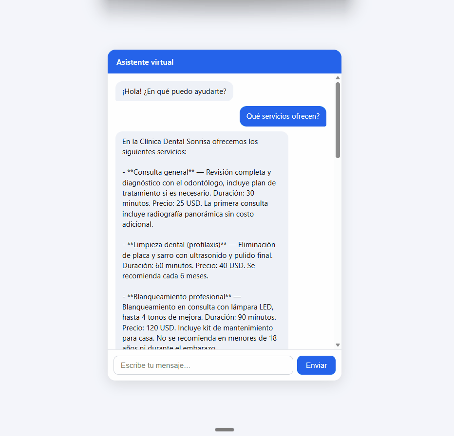

Un asistente virtual reutilizable por sector: responde preguntas sobre la base de conocimiento de cada empresa y gestiona citas (agendar, consultar, cancelar). Montar la solución para un cliente nuevo es crear una carpeta de configuración — el código no se toca.

Dos capacidades centrales sobre una arquitectura pensada para escalar de POC a producción.
Recupera información del corpus del cliente (markdown/PDF) y responde citando la fuente. Si no sabe, lo dice — nunca inventa.
Consulta disponibilidad, reserva, consulta y cancela citas. Lock transaccional que evita la doble reserva del mismo horario.
Cada empresa es una carpeta: alcance, persona, servicios, horarios y documentos. Sin tocar ni desplegar código nuevo.
Rechaza temas fuera de dominio y resiste inyección de prompt. Cumple la política 2026 de agentes task-specific para WhatsApp.
Ollama en desarrollo (sin costo), Claude Haiku en producción. Cambiar de modelo es editar el .env.
Embeddings multilingües. Canales como adaptadores: CLI y web hoy; WhatsApp con el diseño ya preparado.
Un solo agente con herramientas (tool calling) — no multiagente. Decisión respaldada por investigación: para un chatbot conversacional, el multiagente multiplica el costo en tokens sin mejorar la calidad.
Entra por CLI, web o (futuro) WhatsApp y pasa por un guard de entrada.
El LLM elige la herramienta: buscar en la base o gestionar una cita.
Recupera datos o reserva el slot y redacta una respuesta natural.
Filtra fugas, registra la interacción (PII redactada) y responde.
Decisiones de diseño orientadas a que el proyecto evolucione de prototipo a producción sin reescribirse.
typing.Protocol: LLM, vector store, embeddings y calendario son intercambiables sin tocar el resto.strict en el núcleo + pre-commit.Estado del MVP a julio de 2026.